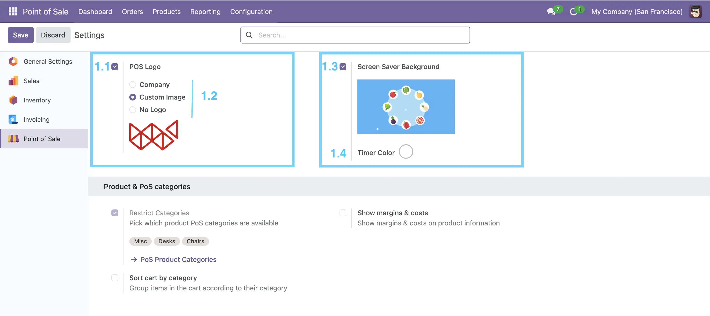
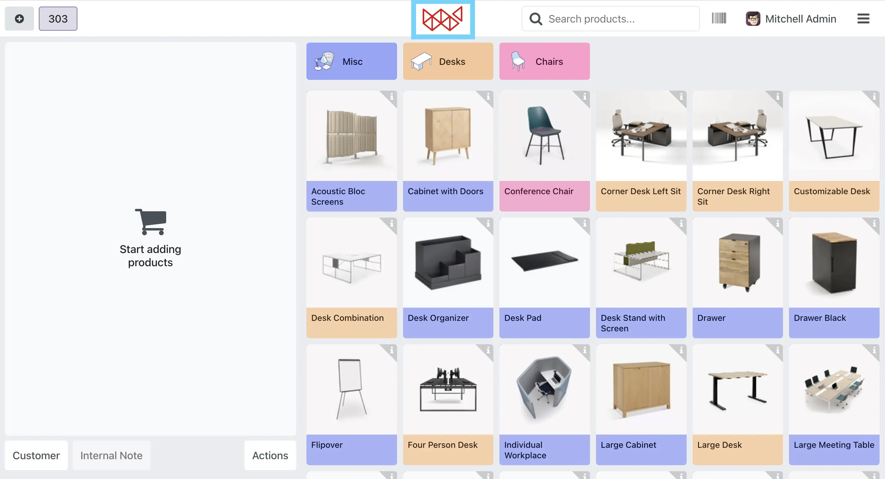

Screens
1. POS Logo & Screen Saver Configuration
-
1.1 Enable POS Logo
Activate the POS Logo option to display a logo on the POS screen. This
setting adds a professional branding touch to your POS interface,
visible during customer transactions.
-
1.2 Logo Option
Choose from three options for the POS logo: Company to display
your company logo, Custom Image to upload a personalized logo
image directly in the configuration, or No Logo to hide the logo
entirely from the POS screen.
-
1.3 Enable Screen Saver Background
Enable this setting to activate a custom screen saver background image
or GIF that displays when the POS is idle. You can upload your preferred
image or animated GIF within this option, adding a personalized, dynamic
touch to your POS terminal.
-
1.4 Timer Color
Define a custom color for the timer displayed on the POS screen saver.
This allows you to match the timer's appearance with your brand's color
scheme or screen saver design for a consistent visual experience.

2. POS Front End Screen
The POS front end screen displays your selected logo at the top of the
interface during active sessions based on your chosen configuration:
Company, Custom Image, or No Logo. Additionally, the custom
screen saver background appears when the POS is idle, enhancing brand
visibility and adding a polished touch to your POS environment.
